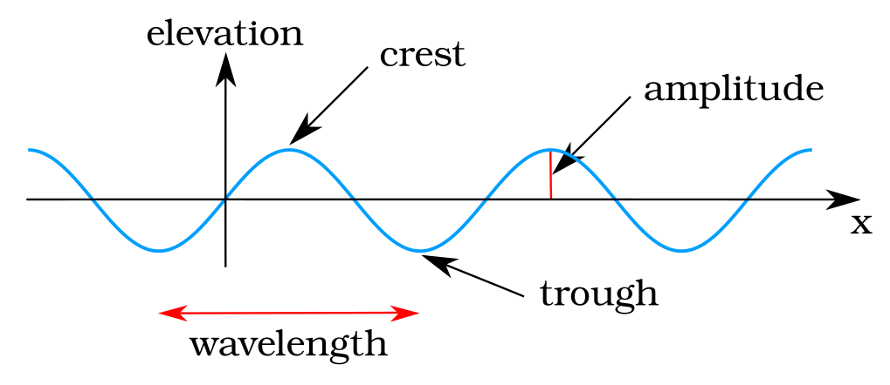
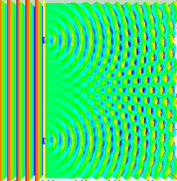
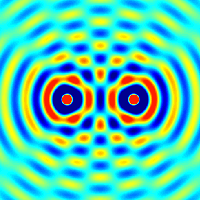
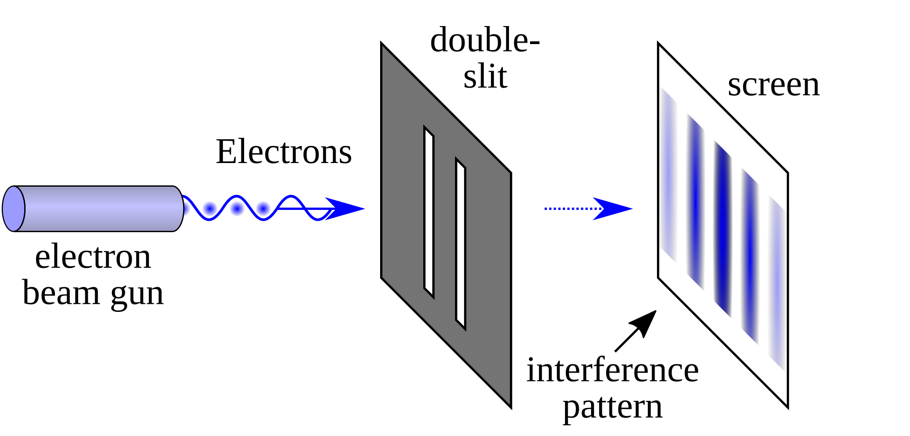

Here is a quick look for a wave and its basic properties:

Here is "Two-slit diffraction pattern with an incident plane wave".
Each slit becomes a wave source. Then, two waves add up, a phenomenon known as superposition.
The waves interfere constructively (adding up) or destructively (canceling each other out).
Here is another demonstration:

Here is a double slit experiment for electrons:

We use both the terms "Amplitude" and "Superposition" in the quantum context, but with different meanings.